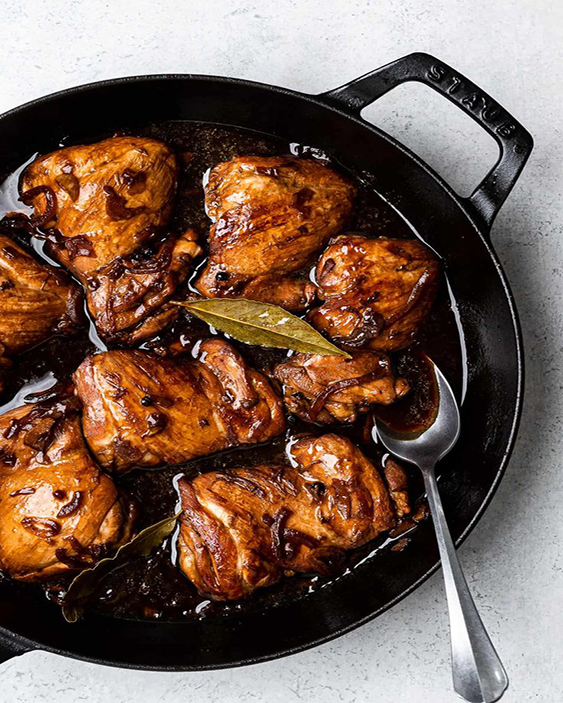
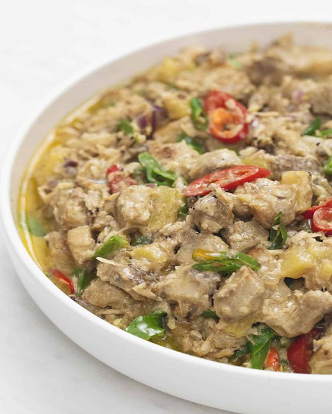

explore filipino RECIPES
kare-kare recipe
Ingredients
- 3 lbs oxtail
- 1 piece small banana flower bud
- 1 lb pig's intestines(cleaned and boiled)
- 1 bundle pechay or bok choy
- 1 bundle string beans
- 4 pieces eggplants
- 1 cup ground peanuts
- 1/2 cup peanut butter
- 1/2 cup shrimp paste
- 34 Ounces water
- 1/2 cup annatto seeds
- 1/2 cup toasted ground rice
- 1 tbsp garlic
- 1 piece onion
- salt and pepper
Instruction
- Let the water boil in a cooking pot
- Put in the oxtail followed by the onions and simmer for 2.5 to 3 hrs or until tender (35 minutes if using a pressure cooker)
- Once the meat is tender, add the ground peanuts, peanut butter, and coloring (water from the annatto seed mixture) and simmer for 5 to 7 minutes
- Add the toasted ground rice and simmer for 5 minutes
- On a separate pan, saute the garlic then add the banana flower, eggplant, and string beans and cook for 5 minutes
- Transfer the cooked vegetables to the large pot (where the rest of the ingredients are)
- Add salt and pepper to taste
- erve hot with shrimp paste. Enjoy!
menudo recipe
Ingredients
- 2 lbs. pork
- 1/4 lb. pig liver
- 1 cup potatoes diced
- 1 piece carrot cubed
- 1/2 cup soy sauce
- 1/2 piece lemon
- 1 piece onion chopped
- 3 cloves garlic minced
- 1 teaspoon sugar
- 3/4 cup tomato sauce
- 1 cup water
- 4 pieces hotdogs sliced diagonally
- 2 tablespoons cooking oil
- 2 to 3 pieces dried bay leaves
- Salt and pepper to taste
Instruction
- Combine pork, soysauce, and lemon in a bowl. Marinate for at least 1 hour.
- Heat oil in a pan
- Saute garlic and onion.
- Add the marinated pork. Cook for 5 to 7 minutes.
- Pour in tomato sauce and water and then add the bay leaves.Let boil and simmer for 30 minutes to an hour depending on the toughness of the pork. Note: Add water as necessary.
- Add-in the liver and hot dogs.Cook for 5 minutes.
- Put-in potatoes, carrots, sugar,salt, and pepper. Stir and cook for 8 to 12 minutes.
- Serve. Share and enjoy!
Afritada recipe
Ingredients
- 2 lbs pork shoulder cubed
- 1 Knorr Pork Cube
- 3 hot dogs sliced
- 2 carrots sliced into small wedges
- 2 potato cube
- 8 oz. tomato sauce
- 3/4 cup green peas
- 1 tomato cubed
- 4 dried bay leaves
- 1 onion chopped
- 6 cloves garlic chopped
- 3 cups water
- 3 tablespoons cooking oil
- Salt and ground black pepper to taste
Instruction
- Heat oil in a cooking pot.
- Once the oil gets hot, saute onion and garlic until onion softens.
- Add pork Saute until brown.
- Pour tomato sauce and water. Stir and let boil.
- Add Knorr Pork Cube. Stir. Add dried bay leaves. Cover and cook in medium heat for 30 minutes. Note: Add more water if needed.
- Add hotdogs. Cook for 10 minutes.
- Add carrot and potato. Cover and cook for 8 minutes.
- Add green peas. Cook for 3 to 5 minutes.
- Season with salt and ground black pepper.
- Transfer to a serving plate. Serve.
- Share and enjoy!
Chicken Curry recipe
Ingredients
- 2 lbs. chicken cut into serving pieces
- 1 tablespoon curry powder
- 1 piece potato cubed
- 4 cloves garlic minced
- 2 stalks celery sliced
- 1 piece red bell pepper sliced
- 2 pieces long green pepper
- 1 piece onion chopped
- 2 thumbs ginger cut into strips
- 2 cups coconut milk
- 1/2 cup all-purpose cream optional
- 1 cup water
- fish sauce and ground black pepper to taste
Instruction
- Heat oil in a pan. Fry potato for 1 minute per side. Remove from the pan. Set aside.
- Using the remaining oil, saute garlic, onion, celery, and ginger until onion softens.
- Add the chicken pieces. Saute until the outer part of the chicken turns light brown.
- Add 1 tablespoon fish sauce. Continue sautéing for 1 minute.
- Pour-in coconut milk and water. Let boil.
- Add curry powder. Stir until the powder is completely diluted. Cover the pot and continue cooking between low to medium heat until the liquid reduces to half.
- Add the red bell pepper and pan fried-potato. Cook for 5 minutes.
- Season with fish sauce and ground black pepper as needed. You can also add all-purpose cream if desired.
- Transfer to a serving bowl. Serve and enjoy!
Tortang talong recipe
Ingredients
- 4 pieces Chinese eggplant
- 2 pieces raw eggs
- 1 teaspoon salt
- 6 tablespoons cooking oil
Instruction
- Grill the eggplant until the color of skin turns almost black
- Let the eggplant cool for a while then peel off the skin. Set aside.
- Crack the eggs and place in a bowl
- Add salt and beat
- Place the eggplant on a flat surface and flatten using a fork.
- Dip the flattened eggplant in the beaten egg mixture
- Heat the pan and pour the cooking oil
- Fry the eggplant (that was dipped in the beaten mixture). Makes sure that both sides are cooked. Frying time will take you about 3 to 4 minutes per side on medium heat.
laing recipe
Ingredients
- 4 ounces dried taro leaves
- 2 packs Knorr Ginataang Gulay Recipe Mix 40 grams each
- ½ lb pork sliced into ¼ inch thick pieces
- 5 pieces Thai chili pepper
- 5 cloves garlic crushed
- 2 thumbs ginger crushed
- 1 piece onion sliced into thin strips
- 5 cups water
Instruction
- Prepare the gata by combining Knorr Ginataang Gulay Recipe Mix with 5 cups water. Stir until the powder completely dilutes.
- Arrange pork, garlic, onion, and ginger in a pot. Pour 3 ½ cups gata. Put on a stovetop and apply heat. Continue to cook for 10 minutes after the liquid boils.
- Add dried taro leaves. Cover the pot and continue to cook until the liquid is almost gone.
- Add chili peppers and then pour remaining coconut milk. Stir and continue to cook until the liquid completely evaporates.
- Transfer to a serving plate. Serve with rice!
- Share and enjoy!
Igado recipe
Ingredients
- 1/2 lbs. pork tenderloin
- 1/2 lb. pork liver
- 1/2 lb. pork kidney
- 1/4 lb pig liver
- 1 1/2 tsp salt
- 1/2 tsp gorund black pepper
- 1 red bell pepper
- 1/2 cup green peas
- 1 carrot
- 3 laurel leaves
- 1 onion
- 5 cloves garlic minced
- 6 tbsp soy sauce
- 5 tbsp white vinegar
- 1 1/4 cup water
- 4 tbsp cooking oil
Instruction
- Boil the kidney with 4 thumbs of ginger for at least 30 minutes. Let it cool down and slice into 2-inch strips. Set aside.
- Heat 2 tablespoons of cooking oil in a pan. Sauté the pork liver for 2 minutes. Remove from the pan and set aside.
- Pour the remaining oil in the pan. Once hot, sauté garlic and onion until the latter softens.
- Add the pork kidney. Cook for 1 minute.
- Add the pork tenderloin. Sauté until the outer layer turns light brown.
- Pour the soy sauce and vinegar into the pan. Let the liquid boil. Stir.
- Add the laurel leaves and pour water. Let boil. Reduce the heat between low to medium setting. Continue cooking for 40 minutes.
- Add the liver back into the pan. Stir and continue cooking for 3 minutes.
- Put the bell pepper, carrot, and green peas.
- Season with salt and ground black pepper. Cook for 2 minutes. Transfer to a serving bowl. Serve hot with rice.
- Share and enjoy!

chicken adobo recipe
Ingredients
- 2 lbs chicken
- 3 pieces dried bay leaves
- 8 tablespoons soy sauce
- 4 tablespoons white vinegar
- 5 cloves garlic
- 1 1/2 cups water
- 3 tablespoons cooking oil
- 1 teaspoon sugar
- 1/4 teaspoon salt
- 1 teaspoon whole peppercorn
Instruction
- Combine chicken, soy sauce, and garlic in a large bowl. Mix well. Marinate the chicken for at least 1 hour. Note: the longer the time, the better
- Heat a cooking pot. Pour cooking oil.
- When the oil is hot enough, pan-fry the marinated chicken for 2 minutes per side.
- Pour-in the remaining marinade, including garlic. Add water. Bring to a boil
- Add dried bay leaves and whole peppercorn. Simmer for 30 minutes or until the chicken gets tender
- Add vinegar. Stir and cook for 10 minutes.
- Put-in the sugar, and salt. Stir and turn the heat off.Serve hot. Share and Enjoy!
humba recipe
Ingredients
- 4 lbs. pork belly cubed
- 1 piece Knorr Pork Cube
- 3 cups clear soft drink
- 1 cup water as needed
- 2 ounces banana blossoms
- 2 tablespoons salted black beans
- 3 tablespoons white vinegar
- ½ cup soy sauce
- 1 piece onion chopped
- 2 tablespoons brown sugar
- 6 cloves garlic crushed and chopped
- ½ teaspoon crushed peppercorn
Instruction
- Heat a wok or pan. Sear pork belly until it turns brown and enough oil gets extracted from the fat. Remove the pork from the wok. Set aside.
- Heat around 3 tablespoons of oil. Sauté garlic and onion until the onion softens.
- Add the pork back into the wok and pour-in soy sauce. Sauté for 1 minute.
- Add vinegar. Continue sautéing until liquid dries-up.
- Pour clear soft drinks into the wok. Cover and let boil.
- Add crushed peppercorn. Adjust heat to low. Continue boiling for 35 minutes.
- Add banana blossoms and salted black beans. Cover the wok and continue cooking until the pork gets tender. Note: you can add water if needed.
- Add brown sugar. Stir. Cook for 1 minute.
- Transfer to a serving plate. Serve with warm rice.
- Share and enjoy!
goto soup recipe
Ingredients
- 1 cup uncooked rice
- 1 lb. ox tripe cleaned
- 1 lb. pig large intestine cleaned
- 4 eggs boiled and shelled
- 5 cups water for cooking
- 6 cups water for boiling
- 2 teaspoons beef powder or 1 beef cube
- 1 teaspoon turmeric powder optional
- 2 tablespoons minced ginger
- 1 medium onion minced
- 5 cloves garlic minced
- 2 teaspoons garlic powder
- 3 tablespoons cooking oil
- 1 head toasted garlic
- 1/4 cup chopped green onion
- 1/2 cup crushed chicharon
- Salt and pepper to taste
Instruction
- Boil 6 cups of water in a deep cooking pot.
- Add the ox tripe, pig intestine, and 1 teaspoon salt. Boil for 2 to 3 hours or until soft. Add water as needed. Remove the tripe and intestine from the pot to cool down and then slice into bite sized pieces. Set aside.
- Heat the cooking oil in a deep cooking pot.
- Saute the onion, ginger, and garlic.
- Once the onion is soft, add the tripe and intestine. Cook for 2 to 3 minutes.
- Add the beef powder( or cube), turmeric powder, and garlic powder.
- Pour-in the water. Stir and let boil.
- Add the rice. Allow the water to boil once more and then adjust the heat between low to medium. Cook for 30 to 45 minutes or until the desired texture is achieved. Add water if needed and stir every 5 minutes or so to prevent the rice from sticking on the pan.
- Add salt and pepper to taste.
- Transfer to a serving bowl. Add egg and top with green onions, toasted garlic, and crushed chicharon.
- Serve. Share and enjoy!
bulalo recipe
Ingredients
- 2 lbs beef shank
- ½ cabbage whole leaf individually detached
- 1 bundle bok choy
- 2 cobs corn each cut into 3 parts
- 2 Tablespoons whole peppercorn
- 1/2 cup green onions cut unto 1 1/2 inch pieces
- 1 onion
- 34 ounces water
- fish sauce to taste optional
Instruction
- In a big cooking pot, pour in water and bring to a boil
- Put-in the beef shank followed by the onion and whole pepper corn then simmer for 1.5 hours (30 mins if using a pressure cooker) or until meat is tender.
- Add the corn and simmer for another 10 minutes
- Add the fish sauce,cabbage, pechay, and green onion (onion leeks)
- Serve hot. Share and Enjoy!

bicol express recipe
Ingredients
- 2 lbs. pork belly sliced into strips
- 2 cups coconut milk
- 2 cups coconut cream
- 1/2 cup shrimp paste bagoong alamang
- 4 cloves garlic crushed
- 6 pieces Thai chili pepper chopped
- 1 thumb ginger minced
- 1 piece onion chopped
- 1 pieces Serrano pepper sliced
- 1 cup water optional
Instruction
- Combine ginger, garlic, onion, Thai chili pepper, pork, and coconut milk in a pan. Mix well. Cover the pan and turn the heat to on. Let the mixture boil.
- Remove the cover. Stir. Add half of the bagoong and pour around 1 cup of coconut cream and a cup of water. Stir and adjust the heat to low. Cook until the sauce reduces to a quarter (around 50 minutes).
- Add the remaining coconut cream and bagoong alamang (as needed). Also add the Serrano peppers. Continue cooking in low heat until the sauce thickens (around
- Transfer to a serving plate and serve with warm rice.
pancit guisado recipe
Ingredients
- 1/2 lb pancit bihon
- 1 piece Knorr Shrimp Cube
- 1/2 lb. chicken thigh boiled and shredded
- 8 pieces shrimp shell and head removed
- 1/2 piece small cabbage chopped
- 3/4 cup carrot julienne
- 3 pieces stalks celery chopped
- 3/4 cup sliced long green beans
- 1 piece onion sliced into thin pieces
- 5 tablespoons dark soy sauce
- 2 pieces Chinese sausage chopped
- 5 cloves garlic crushed
- 1/2 cup chopped parsley
- 1/4 teaspoon ground black pepper
- 4 tablespoons cooking oil
- 4 cups water
Instruction
- Soak pancit bihon in water for 8 to 10 minutes. Drain water and set noodles aside.
- Heat oil in a pot. Pan-fry shrimp for 1 minute per side. Remove and set aside.
- Saute onion and garlic using remaining cooking oil. Add Chinese sausage. Cook for 1 minute.
- Add shredded chicken and celery. Cook for 1 to 2 minutes.
- Add Knorr Shrimp Cube. Crush the cube and continue to saute for 30 seconds.
- Pour-in soy sauce. Add parsley, carrot, green beans, and cabbage. Stir. Cover and cook for 3 minutes using medium heat.
- Add pancit. Toss ingredients using a kitchen tong.
- Season with ground black pepper and add the shrimp back. Toss until well blended. Cover the pot and continue to cook for 2 to 5 minutes between low to medium heat.
- Transfer to a serving plate. Serve. Share and enjoy!
pancit bihon recipe
Ingredients
- 1 lb pancit bihon Rice Noodles
- 1/2 lb. pork cut into small thin slices
- 1/2 lb. chicken cooked, deboned, and cut into thin slices
- 1/8 lb. snow peas
- 1 cup carrot
- 1/2 small cabbage chopped
- 1 cup celery leaves chopped finely
- 1 onion chopped
- 1/2 tbsp garlic minced
- 1 chicken cube
- 5 tbsp soy sauce
- 3 to 4 cups water
Instruction
- In a large pot, Saute the garlic and onion
- Add the pork and chicken then let cook for 2 minutes
- Add the chicken cube and water then simmer for 15 minutes
- Put in the carrots, pea pod, cabbage, and celery leaves and simmer for a few minutes
- Remove all the ingredients in the pot except for the liquid and set them aside
- In the pot with the liquid in, add the soy sauce and mix well
- Add the pancit bihon (makes sure to first soak it in water for about 10 minutes) and mix well. Cook until liquid evaporates completely
- Put-in the vegetables and meat that were previously cooked and simmer for a minute or two
- Serve hot. Share and enjoy!
sisig recipe
Ingredients
- 1 lb. pig ears
- 1 1/2 lb pork belly
- 1 piece onion minced
- 3 tablespoons soy sauce
- 1/4 teaspoon ground black pepper
- 1 knob ginger minced (optional)
- 3 tablespoons chili flakes
- 1/2 teaspoon garlic powder
- 1 piece lemon or 3 to 5 pieces calamansi
- ½ cup butter or margarine
- ¼ lb chicken liver
- 6 cups water
- 3 tablespoons mayonnaise
- 1/2 teaspoon salt
- 1 piece egg (optional)
Instruction
- Pour the water in a pan and bring to a boil Add salt and pepper.
- Put-in the pig’s ears and pork belly then simmer for 40 minutes to 1 hour (or until tender).
- Remove the boiled ingredients from the pot then drain excess water
- Grill the boiled pig ears and pork belly until done
- Chop the pig ears and pork belly into fine pieces
- In a wide pan, melt the butter or margarine. Add the onions. Cook until onions are soft.
- Put-in the ginger and cook for 2 minutes
- Add the chicken liver. Crush the chicken liver while cooking it in the pan.
- Add the chopped pig ears and pork belly. Cook for 10 to 12 minutes
- Put-in the soy sauce, garlic powder, and chili. Mix well
- Add salt and pepper to taste
- Put-in the mayonnaise and mix with the other ingredients
- Transfer to a serving plate. Top with chopped green onions and raw egg.
- Serve hot. Share and Enjoy (add the lemon or calamansi before eating)
pork sinigang recipe
Ingredients
- 2 lbs. Pork belly cubed
- 66 g. Knorr Sinigang sa Sampaloc Mix with Gabi
- 2 pieces talong sliced
- 8 pieces okra
- 18 pieces string beans cut in 2-inch pieces
- 5 ounces daikon radish (labanos) sliced
- 1 bunch kangkong
- 1 piece onion wedged
- 2 pieces tomato wedged
- 6 pieces shishito pepper
- 8 cups water
- Fish sauce and ground black pepper to taste
- 3 tablespoons cooking oil
Instruction
- Heat oil in a cooking pot. Saute onion until layers separate. Add half of the tomato. Saute for 2 minutes.
- Add pork belly. Continue sauteeing until the pork browns while adding around 1 tablespoon fish sauce.
- Pour water. Cover the pot and let the liquid boil.
- Add Knorr Sinigang sa Sampaloc with Gabi. Cover and adjust heat between low to medium. Cook for 30 minutes or until the pork gets tender.
- Add labanos. Cover and continue cooking for 30 minutes.
- Add eggplant, string beans, and okra. Cook for 5 minutes.
- Add kangkong stalks and remaining tomato. Cook for 3 minutes.
- Season with fish sauce (as needed) and ground black pepper.
banana turon recipe
Ingredients
- 6 pieces bananas saba or plantains, cut in half (lengthwise)
- 1 cup jackfruit ripe, sliced
- 1 1/2 cup sugar
- 12 pieces lumpia wrapper
- 2 cups cooking oil
Instruction
- Roll the banana on the sugar plate and ensure that the banana is coated with enough sugar
- Place the banana with sugar coating in the spring roll wrapper and add some ripe jackfruit
- Fold and lock the spring roll wrapper, use water to seal the edge
- In a pan, heat the oil and put-in some sugar.Wait until the brown sugar floats
- Put-in the wrapped banana and fry until the wrapper turns golden brown and the extra sugar sticks on wrapper
- Serve hot as a dessert or snack. Share and Enjoy!
chicaron bulaklak recipe
Ingredients
- 2 lbs. ruffle fat
- 1 tablespoon whole peppercorn
- 5 dried bay leaves
- 2 ½ tablespoons sea salt
- 4 cups canola oil
- 6 cups water
Instruction
- Arrange the ruffle fat, whole peppercorn, 2 tablespoons salt, and bay leaves in a cooking pot. Pour-in water. Let boil. Cover and then simmer for 1 hour.
- Turn the heat off. Remove the boiled ruffle fat from the pot and then let the water drip-off.
- Rub the remaining salt all over the ruffled fat. Set aside.
- Meanwhile, heat the cooking oil in a deep fryer or a deep cooking pot.
- When the oil gets hot, slowly add-in the ruffled fat. Deep fry in low to medium heat until the texture becomes crisp and the color turns medium brown.
- Remove from the deep fryer or cooking pot. Arrange in a plate lined with paper towels to absorb the oil.
- Serve with spiced vinegar.
- Share and enjoy!
halo-halo recipe
Ingredients
- Put your own desired disered amount
- crushed or shaved ice
- milk (fresh or evaporated)
- sugar, if needed
- sweetened saba or plantain bananas
- sweetened sweet potatoes
- fresh or sweetened langka (jack fruit)
- sweetened garbanzos or beans
- coconut strips or sweetened macapuno
- sweetened red munggo
- nata de coco (coconut gel)
- sago or tapioca pearls or jelly cut into cubes
- pinipig
- leche flan (topping)
- ube jam or ube ice cream (topping)
Instruction
- In a tall glass, add (disered amount)teaspoon of each of your selected ingredients.
- Add sugar if you like.
- Fill the glass with shaved ice up to the brim.
- Drizzle with milk
- Add the toppings of choice.
- Serve with a long spoon to mix ('halo') and enjoy

Binignit recipe
Ingredients
- 1 1/2 cups sweet potatoes kamote, diced
- 1 cup taro roots gabi, diced
- 1 1/2 cups purple yam
- 1 1/4 cup plantains saging na saba, diced
- 1 cup ripe jackfruit langka, sliced
- 2 cups small tapioca pearls cooked
- 12 to 20 pieces glutinous rice balls bilo-bilo
- 1 cup granulated white sugar
- 3 1/2 cups coconut milk
- 2 cups water
Instruction
- Pour water in a large cooking pot and apply heat. Let boil.
- Add 1 3/4 cups of coconut milk then wait until it re-boils.
- Put-in the sweet potatoes, purple yam, and taro roots and simmer for 8 minutes.
- Pour-in the remaining coconut milk, sugar, and glutinous rice balls then stir. Simmer for 7 minutes.
- Add the plantains then cook for an additional 2 minutes.
- Put-in the jack fruit and cook for 2 minutes more.
- Slowly slide-in the cooked tapioca pearls then stir. Simmer for 1 minute.
- Turn off heat and transfer to a serving plate.
- Serve either hot or cold. Share and enjoy!
palitaw recipe
Ingredients
- 2 cups glutinous rice flour
- ½ cup granulated sugar
- 1 cup water
- ½ cup sesame seeds roasted
- 1 cup grated coconut
Instruction
- Combine glutinous rice flour with water and mix until a dough is formed.
- Scoop about 2 tablespoons of dough then mold it into a ball-shaped figure.
- Flatten the ball-shaped dough using the palm of your hands.
- Boil water in a cooking pot then put-in the flattened dough.
- When the flattened dough starts to float, remove them from the pot and set it aside allowing water to drip.
- Combine sugar and roasted sesame seeds then mix well.
- Roll the rice cake in grated coconut then in the sugar-sesame seed mixture.
- Arrange in a serving plate then serve. Share and enjoy!
biko recipe
Ingredients
- 2 cups glutinous rice aka sticky rice or malagkit
- 1 1/2 cups water
- 2 cups brown sugar
- 4 cups coconut milk
- 1/2 tsp salt
Instruction
- Combine the sticky rice and water in a rice cooker and cook until the rice is ready (we intentionally combined lesser amount of water than the usual so that the rice will not be fully cooked)
- While the rice is cooking, combine the coconut milk with brown sugar and salt in a separate pot and cook in low heat until the texture becomes thick. Stir constantly.
- Once the rice is cooked and the coconut milk-sugar mixture is thick enough, add the cooked rice in the coconut milk and sugar mixture then mix well. Continue cooking until all the liquid evaporates (but do not overcook).
- Scoop the cooked biko and place it in a serving plate then flatten the surface.
- Share and Enjoy!